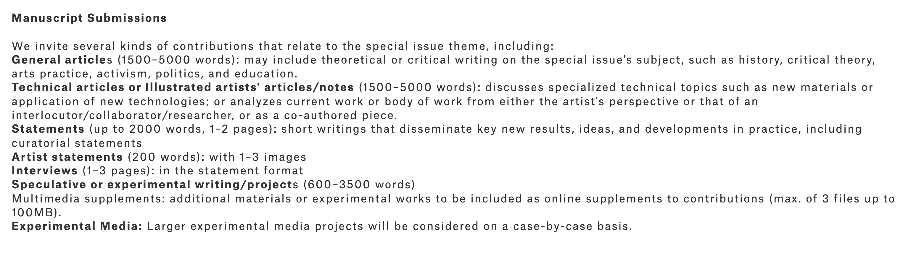

Leonardo和我的第一篇文章
从去年11月中完成初稿后一直搁置到今年3月初，一周密集地修改后于3月10号完成投稿。大概3个月后，6月2号收到第一轮意见并要求7月13号提交revision。最终于7月初一两周时间根据reviwer意见密集修改后，于7月8号第二次提交，当前等待结果中。
Leonardo的一些信息
Leonardo应该是 Art+Technology这个领域首屈一指的期刊。Metrics纬度，它是AHCI且在SJR分区排名中为Q1（Visual Art and Performing Art子类）。其他比较类似期刊有Digital Creativity，但最高rank是Q2。 也有CoDesign等其他高排位期刊，但都是偏设计类不是真正的Art+Technology，尤其是和art practice直接相关的期刊别无二选；从我目前的搜罗来看，可能 International Journal of Performance Arts and Digital Media 性质类似，但是它只是ESCI。
另有Poetics，Continuum，October，The Journal of Aesthetics and Art Criticism 等SSCI/AHCI期刊，似乎非常“文科”，待确定相关性。最近在想如果不是“Project”而偏纯文科，从文献中生发观点的文章应该去哪里；找到些 （AHCI）Art Journal 例如 OXford Art Journal (Oxford Academic) 和
Art Journal (Tylor & Francis) 等，还有Edmond Ernest也常发的Arts（Journal）MDPI, 需要进一步研究并总结到期刊列表。
本来关于Leonardo的权威性只是通过行业口碑的认知，但是它没有其他同类期刊的事实难免让人怀疑它这“第一”的含金量——到底是打遍天下无敌手的没有对手，还是真的没有竞争者、属于自己和自己玩儿的没有对手。但最近在做一些关于Generative Art的Research，偶然的一些发现让我彻底对Leonardo有了全新的认知。
 来自Google Search网页截图，搜索 Vera Molnar。
来自Google Search网页截图，搜索 Vera Molnar。
我在找到Semantic Shcolar上找到一些关于古早时期的Artist做Computer Art的相关research，例如关于Vera Molnar的Toward Aesthetic Guidelines for Paintings with the Aid of a Computer发表于Leonardo。本来合情合理，研究Vera Monlar的Generative Art发在Leonardo上没有问题，但是当看到作者和发表时间的时候事情就变得有意思起来。
 Toward Aesthetic Guidelines for Paintings with the Aid of a Computer PDF截图。
Toward Aesthetic Guidelines for Paintings with the Aid of a Computer PDF截图。
这是一篇Vera Molnar写的关于自己的Practice的Paper！类似地，Georg Nees，Michael Noll 还有George Stiny and Michael Thompson等artist不仅仅写自己的work，还互相发评论对方publication的文章。Leonardo就是这些早期artist关于Art+Technology展示和讨论的舞台。这大概才是Leonardo的底色，不是Indexing和Ranking的问题，它是原生的Art+Technology Research&Publication Platform！
Jul 23， 2023 南沙 （未完待续）。
Leonardo的一些关联信息
记得很早的时候和Jace合作一篇文章的时候，他提到他从来不写MLA之外的reference format，不投任何形式收费的期刊；后者还好理解，但是前者实在与我这种Goal-Oriented的思维（指我认为只要是好的期刊会议都值得一冲，不加选择——全部无脑冲）大为相左。现在我似乎有些理解了。
如果面对大为不同的文章框架结构、常规叙事方式、甚至长度和不同的格式要求，如果不加选择的予以迎合，就会在formatting上耗费极大的时间精力。这个formatting还是不只是格式修改，有可能还是文章结构和叙事调整。如果假设文章不是每投必中，但凡辗转不同的目的地都要重新修改，例如8 page变6 page，6page 拓展到10+page都是额外工作。更为重要的是，来回在不同的要求下切换也很难形成自己的vibe，或者说直观经验和肌肉记忆。
这个时候那些会议、期刊的内在关联和背后的继承关系就值得探索一番。表面上看，即是找到一些（在研究领域已经适合的前提下）共享类似要求的publication destination。更深入来说，也是找到一个community，一个共享同样价值观和价值判断的环境，然后在这个环境中生存和生活。在这样的思路下，我很惊喜的发现siggraph art paper和Leonardo几乎是共享稿件标准，尤其2023年的siggraph asia art paper直接使用了Leonardo的期刊文章要求 （Siggraph Asia Art Track 的特殊情况暂且不论），只是在文章长度上做出了比Leonardo 期刊文章更为严格的要求——3500 words Max （相比之下，Leonardo是5000 words Max，对于regular paper的长度建议是3500 words ～ 5000 words）。
Leonardo和Siggraph Art Track的渊源还远不止如此（我还盘算着把历年的siggraph art paper 和它们的Leonardo 特刊做一个整理），siggraph art track的头十多年（2009～2020）一直都是和Leonardo合作，每年一个特刊发表Siggraph art paper和gallery 直到2021年开始合作终止，art track 开始以一个session出现在主会的proceeding里。同样的，另外一个主要会议——ISEA，直到今年在巴黎听到Roger Malina关于ISEA起源的keynote才知道，ISEA的创始人之一就是他（Leoanrdo的前主编以及Leonardo创刊人Frank Malina的儿子），而且第一年的ISEA conference的paper还以特刊形式发在了Leonardo上 （see https://www.isea-international.org/history/）。而ISEA和Siggraph的Archive都是同一拨人依托于Siggraph community在做维护，三者的联系可见一斑，里面这些丝丝缕缕也可以是很好玩儿的文章（好的，一下就画饼了两篇文章—— （1）Siggraph Art Track的十几年。（2）ISEA，Siggraph Art，Leonardo的丝丝缕缕）。
Leonardo的一些Practical信息
Leonardo的初衷是给artist提供平台并以scientific research/writing format 发表研究，也就是大家说的paper，所以它是强调scientific writing的，和那种artist-tone的writing有区别。再是，art的practice属性毕竟在那儿，作为面向artist的平台，practice 和 project也不会像其他science conference那样被绝对的不容忍。。。 说人话就是，很有必要按scientific writing来，因为这也是Leonando的初衷——是best practice，但是在已发表文章中——包括Leonardo的要求中——也会有例外。

来自 Leonardo 网站截图。
Leonardo的官方指引可以参见以上截图。总结来说，Leonardo的文章从类型和长度来说大致分三类：
（1）长文 （5000 words Max，注意这里的5000 是包括abstract、reference、bio等一切，根据经验实际正文长度大概4000字）。如果按照标准意义的scientific research/writing的方式去frame the work，则从作者角度不太需要纠结是general article 还是technical article，最终大概率是编辑决定，实际对作者也无影响。
（2）另外一种是statement，比如那些“Comments”类的文章，大概就是1～2 page，更多是观点的表达。看起来关于一个展览的通告啊、论述啊、评论啊，也是合适的题材——更多偏通讯功能和观点表达。
（3）虽然没有看到很合适的第三种文章的例子或一手经验，但根据描述我理解的是这个就偏Project Report了，应该是允许它更加“Practice”，在 Practical Project vs. Research 的天平之间可以更向Practice倾斜，长度也被限制在3500 words max 和 Siggraph Art （Long）Paper 的要求一致。
从实际出发，Siggraph Art Paper不管是3500 Max的Long Paper 还是2500 Max 的 Short Paper，都是可以直接投Leonardo，至于属于 Experimental writing/project 还是General article （Technical article）取决于 How to frame the work，不需要对文章的写法或叙事做调整，文章的长度也不会有任何问题。
因为如果按写到允许最长考虑， Long Paper有大概 500 words max的空间去extend，Short Paper 则 1500 words）。但是Leonardo对文章长度要求允许区间很广，甚至short paper基本正好fit in 3500 words的limitation，长文直接提交也无妨可以被当做 general article长度考量。在当前的情况下，Siggraph Art Track和Leonardo脱钩，Siggraph的Improved & Extended version 再投Leonardo 理论上似乎也是合理的。
除了siggraph art paper和Leonardo放到一个轨道上考虑之外，我还对Leoardo 的statement文章很感兴趣，总觉着写这些文章第一不很有功利性，然后表达也很自由，不需要是report a work 而是 express an opinion。或者总觉得这种才是个学术环境，一如当年那些石器时代的computer artist在leonardo上来来回回的争论一样。
我的第一篇Leonardo文章
只是Leoardo本身的一些泛泛而谈的信息就已经进2500字了 （不超过2000～2500 words 也是我给这些article设定的limitation），关于Shanshui Journey的总结复盘就再写一个文章吧。
Jul 24， 2023 南沙。